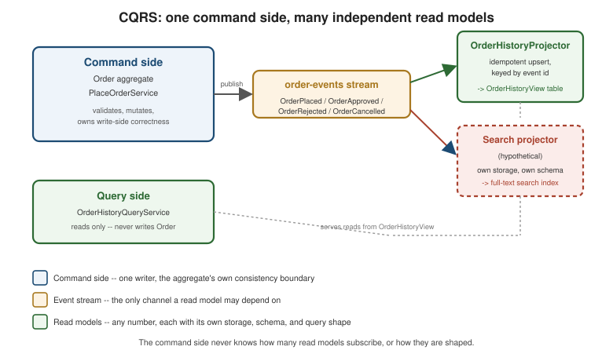

CQRS
|
This content was generated with the assistance of AI and should be verified against the official documentation before being relied on in production. |
Sagas and Domain
Events both start from the same corollary: once Order, InventoryItem, Payment and Shipment are separate
aggregates owned by separate services with separate databases, no single query can join across them the way a
single-database application would. CQRS (Command Query Responsibility Segregation) is the pattern that
answers the resulting query problem, not by giving queries back their join, but by treating reads and writes as
two different responsibilities with two different models. This page covers why that split becomes necessary,
what it looks like in practice, and the canonical OrderHistoryView read model the rest of this section’s
examples (and Worked Example) reuse, shown with the same Java
21 / Spring Boot 4.1.x / Spring Data JPA / Spring for Apache Kafka 4.1.x baseline as the rest of this section.
Why queries are hard once data is decomposed
Richardson’s Microservices Patterns 7.1 opens the query problem with the plainest possible symptom: "find every
order for customer X, together with each order’s current shipping status" now has to read Order data owned by
the Order service and Shipment data owned by the Shipping service, and no database transaction spans both. One
tempting answer is API composition — an API composer (a dedicated service, or the client itself) calls the
Order service’s API for the orders, then calls the Shipping service’s API once per order (or once, batched, if
the Shipping API supports it) for each shipment’s status, and joins the two result sets in memory before
returning a single response. This works, and for many queries it is the right, simplest answer — but it breaks
down in three specific ways as the query gets less trivial:
-
In-memory joins do not scale like a database join does. A database join lets the query planner push filtering down before combining rows; an API composer has already paginated and fetched the child data by the time it starts joining, so a "top 20 orders by total amount, with shipping status" query either fetches far more child data than it needs (every shipment for every candidate order, before knowing which 20 survive) or gives up on doing the sort/filter step efficiently at all.
-
Filtering on an attribute another service owns is not expressible as a composed call. "Every order currently `IN_TRANSIT`" filters on data Shipping owns, not Order — the API composer would have to fetch all orders, then call Shipping once per order just to throw most of them away, rather than letting one query push the filter down to where the data lives.
-
The composed result’s consistency is only as good as its slowest call. Between the composer’s call to Order and its call to Shipping, either side’s data can change — the composed response reflects no single point in time across both services, only "Order as of the first call, Shipping as of the second," which is a real, visible inconsistency a single-database join would never have produced.
A related but distinct problem shows up even inside one service, with no cross-service call involved at all:
Order’s own write-optimized shape — an `id, a customerId, a status, and a normalized OrderLine
collection — is exactly wrong for some queries the business still needs answered against it. Search ("orders
mentioning product X in their line items"), geospatial queries ("shipments currently within 5km of a given
depot"), and reporting ("total revenue per day per product category, over the last 90 days") all need a
different index, a different storage engine, or a different shape entirely than the row-per-aggregate,
optimistic-locked table OrderRepository.save(order) writes to — running any of them against the write model
directly means either a full scan on every query or an index that slows down every write to speed up a query the
write path never itself needs. The separation-of-concerns argument that motivates CQRS generalizes past the
cross-service case: the service (or module) that implements a query does not have to be the same one that owns
and validates the data the query reads, once the query’s storage and shape needs have diverged far enough from
the write side’s.
Command side and query side
CQRS names the split directly in its title: the command side is everything this section has already built — Order the aggregate, PlaceOrderService validating and mutating it, OrderPlaced/OrderApproved/
OrderRejected/OrderCancelled published as the record of what changed. The query side is one or more
read models — purpose-built, denormalized, disposable projections of that same history, each shaped for a
specific query rather than for write-side correctness. Nothing about Order itself changes to support CQRS: the
command side neither knows nor cares how many read models subscribe to its events, and a read model can be added,
reshaped, or removed without ever touching Order, PlaceOrderService, or the event types they publish.
The split shows up at two different scales, and the running example uses the first throughout while naming the second:
-
Within a service. The Order service itself keeps
Order’s normalized write table for `PlaceOrderService/OrderRepositoryto use, and also maintainsOrderHistoryView(below) as a denormalized, query-optimized table fed by the very same eventsPlaceOrderServicealready publishes — both tables live in the same service, often the same database, but are read and written through entirely separate code paths. -
As query-only services. Nothing requires the read model to live inside the writing service at all: a dedicated
OrderHistoryQueryService(or a whole separate microservice, for a large enough read workload) can subscribe to `Order’s published events, build its own copy of the data in whatever store and shape its queries need, and serve reads with no dependency on the Order service being available, responsive, or even architected the same way. This is API composition’s opposite: instead of composing at query time across live services, the data needed for the query is materialized ahead of time, from events, into one place a single query can read directly.

The figure’s second read model is deliberately hypothetical: the point CQRS makes is not that there is exactly one query side, but that any number of independently shaped read models can subscribe to the same event stream, each optimized for one query pattern, without the command side ever being aware how many there are or changing anything to accommodate a new one.
Designing a view module
Building a read model well comes down to four decisions, each one a direct consequence of the read model being derived rather than authoritative:
-
Choosing the view datastore for the actual queries, not for consistency with the write side.
Order’s write table lives whichever way `OrderRepository/JPA needs for transactional correctness;OrderHistoryViewis free to live in whatever store actually serves its queries well — a relational table with the right indexes for simple lookups by customer, a document store for a view that is naturally one document per order, a search engine (Elasticsearch, OpenSearch) for the free-text search case, or a graph database for a relationship-heavy query. Choosing the Right Database covers the general storage-selection question this decision is one instance of; nothing about the write side’s database choice constrains it. -
Idempotent, concurrent-safe updates. A projector applies events delivered at-least-once, so its update must be safe to apply more than once for the same event and safe against two deliveries racing each other — exactly the idempotent-consumer requirement Domain Events and Transactional Outbox already state for consumption in general, applied here specifically to a query-side projection: an
UPSERTkeyed on the event’s id (or on the aggregate id, when the update is itself naturally idempotent, such as "set status to APPROVED") converges to the same row no matter how many times the same event is redelivered. -
Building and rebuilding views from history. Because the read model holds nothing the event stream does not already contain, it can always be thrown away and rebuilt by replaying the stream from the beginning — a schema change, a bug in the projection logic, or standing up a brand-new read model against history that already happened are all the same operation: replay, and let the projector’s own idempotent-upsert logic rebuild the table row by row. This is only true, importantly, when the event stream itself retains enough history to replay — Messaging Patterns in Practice’s coverage of log compaction covers exactly how a Kafka topic can retain that replayable history without unbounded storage growth, and Event Sourcing covers the write side that makes the event stream a genuinely complete history to replay from, rather than a best-effort broker retention window.
-
Handling replication lag. A read model is only ever as fresh as the last event its projector has applied, and there is always a window — often milliseconds, sometimes longer under load — between an event being published and a projector applying it. Three complementary techniques close the gap between "the write already happened" and "the read model has not caught up yet":
-
Return a version from the command.
PlacedOrderResponse(below) carries the aggregate version the repository persisted whenPlaceOrderService.placeOrdersaved theOrder— the very number the service stamps into every event envelope asaggregateVersion(Domain Events) — so the client has a concrete number to check the read model against, not just a hope that "enough time has passed." -
Poll the view until it reflects that version. The projector stores the envelope’s
aggregateVersionon the view as-is, never a counter of its own (a local counter would drift from the write side the first time the aggregate changed without emitting an event this view projects), so a client (or a thin polling helper in front of the read API) can re-queryOrderHistoryQueryServiceuntil the view’s version is at least the one the command returned, rather than guessing a fixed delay. -
Update the client-side model optimistically in the meantime. Rather than showing a blank or loading state for the entire polling window, the client applies the command’s own response data to its local view immediately — "this order was just placed, with these lines and this total" — and reconciles with the server’s read model once it catches up, exactly the same optimistic-update discipline a well-behaved UI already applies to any asynchronous write.
-
Benefits and drawbacks
CQRS earns its extra moving parts back in four ways, each one the direct fix for a limitation named above:
-
Efficient multi-service queries.
OrderHistoryViewanswers "orders for this customer with their current status" from one table, one query, with no API composition and no in-memory join required — the join already happened once, at projection time, instead of on every read. -
Diverse query support. Search, geospatial, and reporting queries each get their own read model, shaped and indexed for exactly that access pattern, without distorting `Order’s write-side schema to accommodate any of them.
-
Enables querying an event-sourced system at all. Event Sourcing's event store answers "what happened to this aggregate," replayed one aggregate at a time by
streamId— it has no efficient answer to "which orders areAPPROVAL_PENDINGright now" without a read model built from the same events, which is why event sourcing and CQRS are so often adopted together in practice, even though neither pattern strictly requires the other. -
Separation of concerns. The team or service that owns query performance for a given access pattern does not have to be the same team or service that owns write-side correctness for the aggregate the query reads from.
The drawbacks are the direct cost of the same design: more moving parts — a projector, a read-model datastore, and (if the read model lives in its own service) a whole extra deployable, all of which can fail or fall behind independently of the write side — and replication lag, the unavoidable consequence of the read model being asynchronously derived rather than transactionally consistent with the write, closed only ever partially by the version-check/poll/optimistic-update techniques above, never eliminated outright. Choosing the Right Database’s coverage of keeping several databases consistent takes the storage-selection angle on this same trade-off — once the write database and the read database are allowed to be different technologies entirely, CQRS is the pattern name for the consistency story that choice needs; this page does not repeat that storage comparison, only the query-side design it enables.
Code: OrderHistoryView, its projector, and a query-only service
OrderHistoryView is the canonical read model this section’s other pages already refer to
(Transactional Outbox,
Listen to Yourself) — a flat row, one per order, holding
exactly what the order-history query needs and nothing about `Order’s internal aggregate shape:
package com.example.order.query;
import jakarta.persistence.Entity;
import jakarta.persistence.Id;
import java.math.BigDecimal;
import java.time.Instant;
import java.util.UUID;
@Entity
public class OrderHistoryView {
@Id
private UUID orderId;
private UUID customerId;
private String status;
private BigDecimal totalAmount;
private String currency;
private Instant placedAt;
private Instant lastUpdatedAt;
private long version; // the aggregate version carried by the last applied event's envelope -- the same
// number PlacedOrderResponse returns, so the two are directly comparable
protected OrderHistoryView() {
// JPA
}
public OrderHistoryView(UUID orderId, UUID customerId, String status, BigDecimal totalAmount,
String currency, Instant placedAt, Instant lastUpdatedAt, long version) {
this.orderId = orderId;
this.customerId = customerId;
this.status = status;
this.totalAmount = totalAmount;
this.currency = currency;
this.placedAt = placedAt;
this.lastUpdatedAt = lastUpdatedAt;
this.version = version;
}
public void applyStatusChange(String newStatus, Instant occurredOn, long aggregateVersion) {
this.status = newStatus;
this.lastUpdatedAt = occurredOn;
this.version = aggregateVersion; // never a local counter: it must match the write side's numbering
}
public UUID orderId() {
return orderId;
}
public String status() {
return status;
}
public long version() {
return version;
}
}OrderHistoryProjector is the @KafkaListener-based event handler that keeps OrderHistoryView current,
deduplicating on the envelope’s eventId with the same INSERT … ON CONFLICT DO NOTHING idempotency
Transactional Outbox already uses, so a redelivered
event is a safe no-op rather than a double-applied update:
package com.example.order.query;
import com.example.order.domain.event.OrderApproved;
import com.example.order.domain.event.OrderCancelled;
import com.example.order.domain.event.OrderPlaced;
import com.example.order.domain.event.OrderRejected;
import com.example.order.domain.OrderStatus;
import com.example.shared.event.DomainEvent;
import com.example.shared.event.DomainEventEnvelope;
import org.springframework.jdbc.core.JdbcTemplate;
import org.springframework.kafka.annotation.KafkaListener;
import org.springframework.stereotype.Component;
import org.springframework.transaction.annotation.Transactional;
import java.time.Instant;
@Component
public class OrderHistoryProjector {
private final JdbcTemplate jdbcTemplate;
private final OrderHistoryRepository orderHistory;
public OrderHistoryProjector(JdbcTemplate jdbcTemplate, OrderHistoryRepository orderHistory) {
this.jdbcTemplate = jdbcTemplate;
this.orderHistory = orderHistory;
}
@KafkaListener(topics = "order-events")
@Transactional
public void on(DomainEventEnvelope<? extends DomainEvent> envelope) {
int inserted = jdbcTemplate.update(
"INSERT INTO processed_events (event_id, processed_at) VALUES (?, now()) "
+ "ON CONFLICT (event_id) DO NOTHING",
envelope.eventId());
if (inserted == 0) {
return; // redelivered -- already projected, safe no-op
}
long version = envelope.aggregateVersion(); // stored as-is on the view, see OrderHistoryView
switch (envelope.event()) {
case OrderPlaced placed -> orderHistory.upsertFromPlaced(placed, version);
case OrderApproved approved -> orderHistory.applyStatusChange(
approved.orderId(), OrderStatus.APPROVED.name(), approved.occurredOn(), version);
case OrderRejected rejected -> orderHistory.applyStatusChange(
rejected.orderId(), OrderStatus.REJECTED.name(), rejected.occurredOn(), version);
case OrderCancelled cancelled -> orderHistory.applyStatusChange(
cancelled.orderId(), OrderStatus.CANCELLED.name(), cancelled.occurredOn(), version);
default -> { /* an event this read model does not project -- ignored on purpose */ }
}
}
}Derived from Spring for Apache Kafka’s listener model and Spring’s JDBC support — see Spring for Apache Kafka reference — @KafkaListener annotation and Spring Framework reference — Using the JDBC core classes (JdbcTemplate).
OrderHistoryQueryService is a query-only REST endpoint — it never writes through OrderRepository or
touches Order at all, only ever reads the projection OrderHistoryProjector maintains:
package com.example.order.query;
import org.springframework.http.ResponseEntity;
import org.springframework.web.bind.annotation.GetMapping;
import org.springframework.web.bind.annotation.PathVariable;
import org.springframework.web.bind.annotation.RequestParam;
import org.springframework.web.bind.annotation.RestController;
import java.util.List;
import java.util.UUID;
@RestController
public class OrderHistoryQueryService {
private final OrderHistoryRepository orderHistory;
public OrderHistoryQueryService(OrderHistoryRepository orderHistory) {
this.orderHistory = orderHistory;
}
@GetMapping("/customers/{customerId}/order-history")
List<OrderHistoryView> ordersFor(@PathVariable UUID customerId) {
return orderHistory.findByCustomerId(customerId);
}
@GetMapping("/order-history/{orderId}")
ResponseEntity<OrderHistoryView> byId(@PathVariable UUID orderId,
@RequestParam(required = false) Long minVersion) {
return orderHistory.findById(orderId)
.filter(view -> minVersion == null || view.version() >= minVersion)
.map(ResponseEntity::ok)
.orElseGet(() -> ResponseEntity.status(409).build()); // not caught up yet -- caller polls again
}
}byId’s optional `minVersion parameter is exactly the client-side "poll the view" half of the replication-lag
handling above: a client that just placed an order and received PlacedOrderResponse.version() back queries this
endpoint with that same version, and a 409 response (rather than a stale 200) tells it plainly to retry
instead of silently rendering data that predates its own write.
PlacedOrderResponse is what `PlaceOrderService.placeOrder’s HTTP adapter returns to the client, carrying the
version the client needs for exactly that check:
package com.example.order.api;
import java.math.BigDecimal;
import java.util.UUID;
public record PlacedOrderResponse(UUID orderId, String status, BigDecimal totalAmount, long version) {
}Figure and mermaid: a write followed by a stale read
The command side and query side laid out together, from Order.place(…) through to two independently
maintained read models, is the figure above (ddd-cqrs-command-and-query-sides.svg); the sequence below plays out
the replication-lag scenario the figure only gestures at — a client that writes, reads immediately, sees stale
data, and correctly resolves it using the version the write itself returned:
The client’s first read after the 409 is not a wasted round trip — it is the version check doing exactly its
job, telling the client to keep showing its own optimistically-applied local state for one more poll interval
rather than overwriting it with a read model that has not caught up yet.